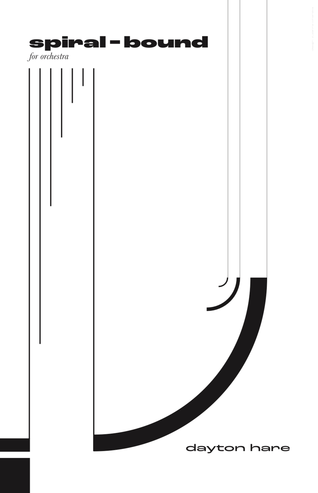

Hello!
My name is Dayton Hare. Generally in my work I try to explore the interplay between the natural world and the narratives we create around it, but I write plenty of pieces on other topics too!
Below you’ll find three works that reflect different aspects of my compositional approach: one for choir, one for chamber ensemble, and one for orchestra. The section for each piece contains a program note, audio recordings (full track + excerpts), video recordings (performance + score follower), and a downloadable score with an embedded PDF viewer. In addition, I’ve provided a score of my most recent orchestral work, spiral bound, which will be premiered by the New York Youth Symphony in March.
I hope you enjoy these selections! If interested, you are also welcome to visit my full website which contains additional compositions and recordings.
— Dayton
Note: For each piece below, I include an embedded score PDF for quick viewing. If a PDF embed ever fails in a particular browser, the download link will always work.
Program Note:
When I was a kid I had an impossibly difficult time understanding lyrics in music. Whether it was the top 40 hits on the car radio or hymns in church, my brain always wanted to classify the voices I heard as just more instruments, timbres and nothing more. It took a deliberate effort on my part to be able to hear the voices as actually saying something, as meaning something, adding an additional layer of communication to the message of the music.
‘whereof one cannot speak’ in some ways tries to dramatize this experiential movement. It starts with the text — a little poem about language I cobbled together from fragments of Wittgenstein — broken into their smallest constituent phonemes, signifying nothing, functioning as sound alone. Over the course of the piece these sounds are pulled together into larger and larger chunks of the text, laboriously moved out of the realm of abstraction and, bit by bit, into recognizable language with meaning to convey. Only by the final sections of the piece can one actually hear what the words are trying to say.
Score: PDF download
SoundCloud (Excerpts):
SoundCloud (Full):
YouTube (Performance):
YouTube (Score follower):
Title: Estuary
Instrumentation: Orchestra
Duration: 9′
Year: 2023
Program Note:
The Colorado River is the lifeblood of the American Southwest. Starting from its source in the Rockies, throughout an otherwise arid region the river irrigates vast hectares of agricultural land and provides millions of people with drinking water. As one of those millions during my childhood, thoughts of where the water came from or where it went rarely crossed my mind.
But today, as climate change places an ever greater strain on the river system, I often think about its imperiled future. A combination of drought, poor planning, and bad policy nearly emptied the river's reservoirs last year, but for decades before it had been drying up downstream, dammed and diverted for human consumption. At the Colorado's mouth, where in centuries past the river formed an estuary with the Gulf of California, the desert has overtaken the riverbed and water rarely reaches the ocean. Now, like so much of the natural world in the anthropocene, the estuary exists only in the traces left behind in the memory of the earth.
My piece follows the river's course, from the stillness of snow-capped peaks to the stillness of the dry desert riverbed, in my own small contribution to this memory.
SoundCloud (Full):
SoundCloud (Excerpts):
Title: An object of some concern
Instrumentation: Piano Trio
Duration: 10′
Year: 2021
Program Note:
Most of my friends could tell you that I have a tendency towards understatement, especially when it comes to talking about my inner life. When I say, then, that something is “an object of some concern,” you can be sure it's actually quite a large point of worry for me, the kind of anxiety-inducing thing I often become fixated on, turning around and around in my mind and worrying myself more all the while.
This piece is about that experience of becoming stuck on a troubling feeling, in general, and about a specific worrisome fixation of mine in particular, the climate crisis. The piece opens with a violent plunge in the strings that mimics the feeling of suddenly awakening in the middle of the night, unable to breath. From there the trio propels itself forward with music that is unrelenting and obsessive, constantly straining higher and higher, threatening to snap, until finally it reaches its breaking point.
This, of course, represents the experience of mounting anxiety, of becoming consumed by the feeling. But more than that, at the risk of being a bit too on the nose, I find that it also mimics the trajectory of global temperatures and the climate emergency.
SoundCloud (Full):
SoundCloud (Excerpts):
Title: spiral bound
Instrumentation: Orchestra
Duration: 10′
No recordings currently available; to be premiered by the New York Youth Symphony in March, 2025
Description:
Over the last year or so, I've been returning again and again
to the idea of spirals as a structure. A form built out of
continuous recursion in ever tightening circles, the natural world
seems full of them. Whether it's spiral seashells, leaf structures,
weather formations like hurricanes, or any number of other examples,
everywhere I seem to turn, there they are.
Human psychology, too, seems to be imbued with them in the form of recurring, obsessive, thought patterns that are difficult to break free from. My spiral fixation is itself an example of this. So when I learned that this commissioned piece for the New York Youth Symphony was to be programmed alongside Brahms' final symphony, whose last movement is a magnificent passacaglia, it felt like the perfect opportunity to try it musically. A passacaglia, after all, is almost a kind of musical spiral, a repeating structure that governs the form and direction of the music.
I set out to write my own, more-explicitly-spiral, less-explicitly-passacaglia passacaglia. Broadly speaking, the piece is built out of two contrasting types of material. The first, the “spiral” theme, is a constantly transposing tone row that seems to circle back on itself, as if eating its own tail. Throughout the sections of the piece where it predominates, it undergoes a gradual process of intensification, starting extremely slow but getting faster and faster until, by the end, it has no choice but to disintegrate into chaos. The other type of material is a resistance to this process, a lyrical and reflective music that remains in a fixed harmonic place, contrasting with the spiral theme's harmonic itinerance. Over time, the spiral music infiltrates these calmer sections, wearing down their resistance, drawing them back into its orbit, until the piece, as it was ever bound to, has no choice but to spiral out of existence.
SoundCloud (Excerpts):
YouTube (Score follower):
Score: Spiral Bound Score Download Link
If you’d like to hear a bit more, here are a few additional recordings. (More are available on my full website.)
Selection 1: Title (instrumentation, year)
Selection 2: Title (instrumentation, year)
Selection 3: Title (instrumentation, year)
(Optional short one-sentence blurb about why this piece is a good complement.)
Prefer one click? Here’s a single playlist link: (Add playlist link here)